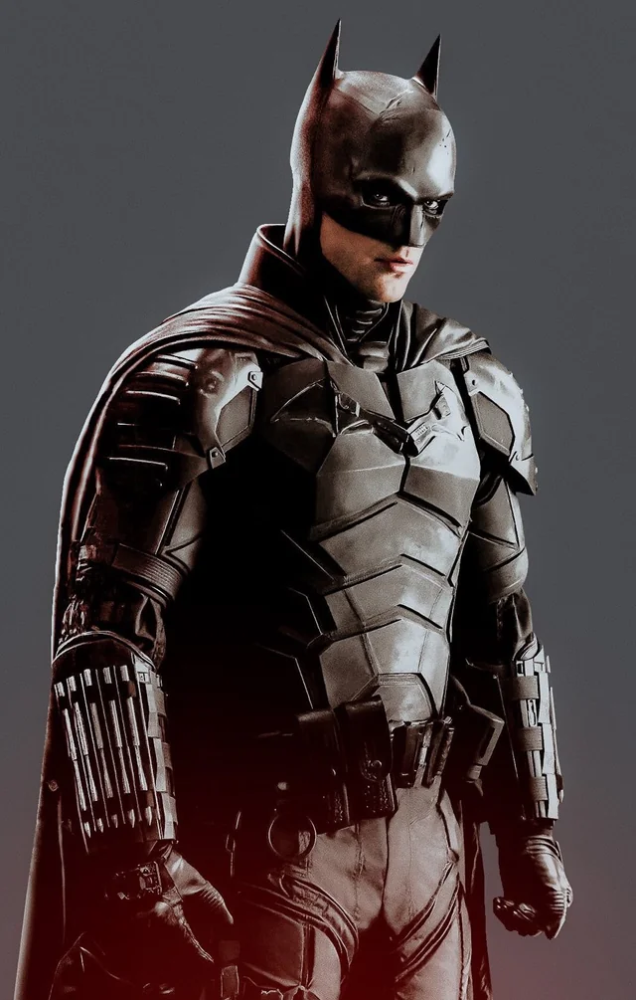

Dossiê Tático: O Projeto Vingança (2022)
Atuação de Referência: Robert Pattinson

Perfil Psicológico Operacional
Detetive obcecado, operando no escuro e registrando tudo em lentes de contacto gravadoras. Focado estritamente em resolução de mistérios e intimidação crua. Sofre de insónia severa, evita a persona pública de Bruce Wayne e documenta patologicamente as suas noites em diários de couro.
Progresso na Investigação do Charada: 45% (Análise de Cifras em andamento).
> Ameaças Nível Serial Killer (Projeto Vingança - Robert Pattinson)
- Charada (Edward Nashton): Assassino em série focado em expor a corrupção da elite de Gotham via enigmas perturbadores e redes sociais.
- Carmine Falcone: O verdadeiro chefe do submundo, operando intocável nas sombras da prefeitura.
- Pinguim (Oz Cobb): Tenente da máfia de baixo escalão e dono do clube Iceberg Lounge.
"Eles acham que eu estou escondido nas sombras. Mas eu sou as sombras."
Diário de Bruce Wayne (Projeto Vingança)